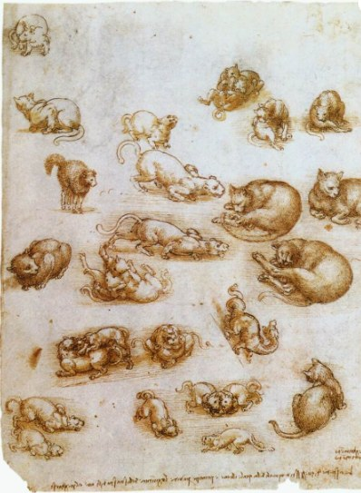

By now you have met Leonardo the engineer, the painter and the scientist. Here is Leonardo the storyteller. He wrote fables, short stories with a lesson, mostly about animals. This one is about a butterfly that made a bad choice:
A fable
The vain and wandering butterfly, not content with being able to fly at its ease through the air, overcome by the tempting flame of the candle, decided to fly into it; but its sportive impulse was the cause of a sudden fall, for its delicate wings were burnt in the flame. And the hapless butterfly having dropped, all scorched, at the foot of the candlestick, after much lamentation and repentance, dried the tears from its swimming eyes, and raising its face exclaimed: O false light! how many must thou have miserably deceived in the past, like me; or if I must indeed see light so near, ought I not to have known the sun from the false glare of dirty tallow?
The lesson: do not mistake a flashy light for the real thing. Tallow is cheap candle fat, and the sun is the real light.
Riddle time
Leonardo also wrote riddles. He called them "prophecies." Each one describes an ordinary thing in a strange way, and you guess what it is. Here are five of his, in his own words. Try each before you open the answer.
Riddle 1
Many will be busied in taking away from a thing, which will grow in proportion as it is diminished.
Show answer
Leonardo's title for this one is Of the Ditch. The more earth you dig out, the bigger the ditch gets.
Riddle 2
Men will walk and not stir, they will talk to those who are not present, and hear those who do not speak.
Show answer
Leonardo's title is Of Dreaming.
Riddle 3
The cruel horns of powerful bulls will screen the lights of night against the wild fury of the winds.
Show answer
Of Lanterns. In Italy, lanterns used to be made from thin slices of horn, which let the light through but kept the wind off the flame.
Riddle 4
Flying creatures will give their very feathers to support men.
Show answer
Of Feather-beds. The feathers inside your bed once belonged to birds.
Riddle 5
Shapes and figures of men and animals will be seen following these animals and men wherever they flee. And exactly as the one moves the other moves; but what seems so wonderful is the variety of height they assume.
Show answer
Your shadow. It copies every move you make, and it gets taller or shorter depending on where the sun is.
And then, the to-do list

His notebooks are packed with grand plans, but also with ordinary reminders. Scattered among the flying machines and the anatomy are lists that look like anyone's errands. Here are some things he wrote to himself:
From several of his lists
Boots, shoes and hose
a very sharp knife
Spectacles
Learn the multiplication of roots from Maestro Luca
Ask Benedetto Portinari how the people go on the ice in Flanders
Look at how ordinary and how odd it is. Boots, a sharp knife and spectacles are things you buy at a market. Right next to them sit a note to learn how to multiply roots and a question about how people walk on ice in Flanders. Errands and big questions live on the same page. There is even a note about where to find a bed:
In his own words
Salvadore, the matress maker, lives on the Piazza di Sant' Andrea, you enter by the furrier's.
The greatest mind of his age still had to remember where to buy a mattress. His notebooks are a working person's pages: half wonder, half chores.
Words to know
- fable
- a short story, often with animals, that teaches a lesson
- tallow
- hard fat from animals, used to make cheap candles
- prophecy
- here, one of his riddles, written like a prediction
- hose
- close-fitting leg coverings people wore in his time
Try it
Optional. For after your session with Rocky, on your own time. Ask a grown-up before you use any website.
- Write your own fable in five sentences: an animal, a mistake, a consequence, and a lesson.
- Write a riddle in Leonardo's style: describe a familiar thing as if you had never seen it. Give it a title that starts with "Of..." and test it on someone.